Прошивка бутлоадера
Бутлоадер, как уже упоминали, прошивается в ардуину через SPI. Значит, если собрались делать ардуину сами, всё-таки придётся собрать простенький программатор. Чтоб прошить бутлоадер из под ArduinoIDE (а так проще всего) необходим программатор под названием DAPA.
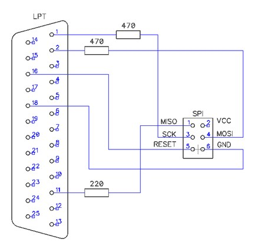
Ну чтож попробуем соберём… Вот такой получился:
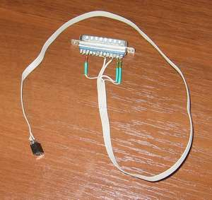 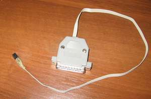
Запускаем IDE, выбираем тип платы Atmega8, выбираем тип платы:
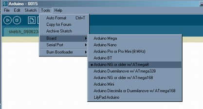
втыкаем шнурок в LPT, Подаём на плату питание, к прошивке готов:
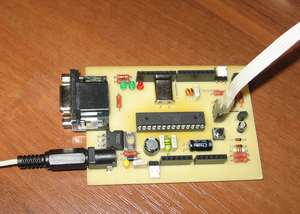
Командуем IDE шить бутлоадер…:
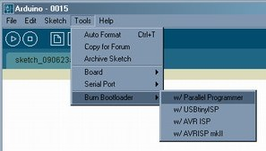
мучительно ждём…ждём ……выскакивает такая штука…:
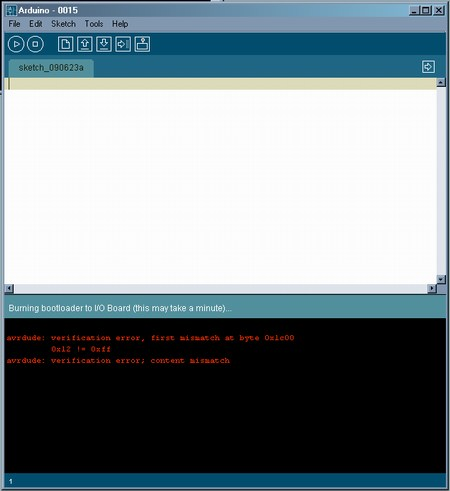
хм, беру другой шнурок (stk200/300) включаю другую софтину(CodeVisionAVR) – читается/шьётся? а этим шнурком только с 4-5 раза… проверяю всё несколько раз – всё верно…
Начинаем эксперименты! Первым делом экранирую шнурок:
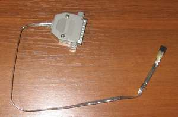
Никакого впечатления… уменьшаем резисторы до 150ом как в обычном — народном программаторе… никаких изменений, убираю резисторы — чуть лучше с 2-3раза шьётся, укоротил провод…ещё…ещё…до предела…есть контакт — 10 из 10!
Вожделенная надпись и укороченный, но стабильный шнурок — без резисторов=/.:
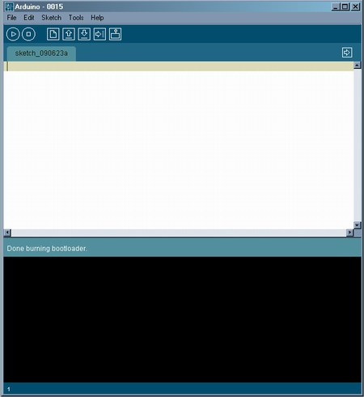 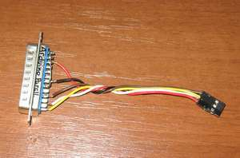z
То что без резисторов — это плохо – LPT жалко. Вот товарищ Илья Данилов
говорит, что если питать ардуину от того-же LPT то всё прилично работает…но этого мне даже пробовать не хочется. Можно конечно запитаться не от худосочного принтерного порта, а откуда-нибудь с фишки питания, например, флоповода (красный провод +5в) может поможет. Но мы пойдём другим путём! Есть у меня старый проверенный во всех условиях и на всех компах шнурок STK200/300:
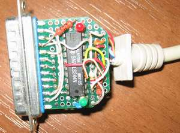 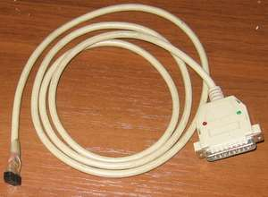
Лучше попробуем его подружить с ArduinoIDE.
Лезем в arduino-0015\hardware\tools\avr\etc\avrdude.conf
вдумчиво читаем, что вначале написано, вникаем, готовимся вписать новый программатор, листаем до “PROGRAMMER DEFINITIONS” ищем куда и что вписать… и с удивлением узнаём что ардуина понимает кучу программаторов и среде них, в секции ”Parallel port programmers”
stk200! Просто всё это добро спрятано от народа! Остаётся только вписать в файл “arduino-0015\hardware\programmers.txt” следующее:
stk200.name=STK200
stk200.protocol=stk200
И запустить ArduinoIDE:
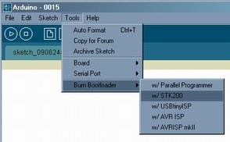
Кроме того, пришлось побороть некоторое разнообразие видов разьёмов внутрисхемного программирования [STK200/300 STK500 AVR910]
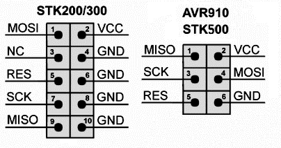
И сделать такой переходник [STK200/300 to STK500 AVR910]
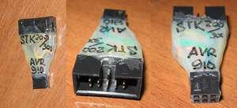 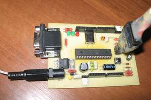
Всё заработало и весьма стабильно – 10 из 10 раз прошилось успешно!
[STK200/300 и Arduino]
.
.
.
.
.
.
.
.
.
И с программатором “4 резистора” тот же эффект!
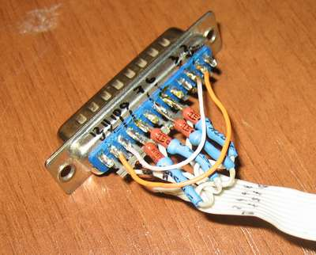
Резюмируя: собираем шнурок “5 проводков- 4резистора” (с разьёмом AVR910)
пишем две строчки в programmers.txt
шьём и радуемся
Схемки обоих вариантов STK200 лежат у нас тут.
Про источники моей паранойи про прошивку не с первого раза можно почитать тут.